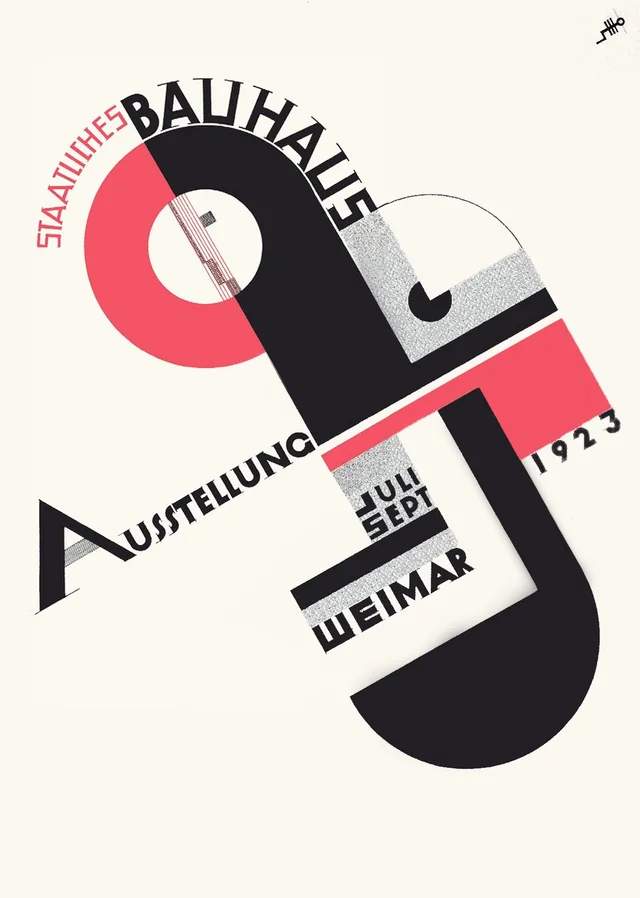

Joost Schmidt
Joost Schmidt (1893–1948) è stato un designer grafico, insegnante e artista tedesco associato alla scuola d'arte e design Bauhaus. Schmidt si unì alla Bauhaus nel 1921, diventando uno degli studenti più promettenti di Walter Gropius. Inizialmente, studiò pittura e design pubblicitario.
Nel 1923, divenne un maestro d'opera presso la Bauhaus e, nel 1928, assunse la direzione del corso preliminare, noto come "Vorkurs" o "Preliminary Course," ruolo che mantenne fino alla chiusura della scuola nel 1933.
Lavori
Schmidt è noto per il suo lavoro nel campo del design tipografico. Ha contribuito a sviluppare nuovi approcci alla comunicazione visiva attraverso l'uso di caratteri tipografici e layout innovativi. Il suo lavoro include la progettazione di manifesti e pubblicazioni che incorporano la sperimentazione con la tipografia, i colori e la disposizione spaziale.
Uno dei contributi più noti di Schmidt è il "Manifesto Bauhaus" del 1923, che ha realizzato in collaborazione con Herbert Bayer. Questo manifesto è un esempio iconico di design grafico moderno e riflette i principi fondamentali del Bauhaus, con un'attenzione particolare all'uso innovativo della tipografia.
